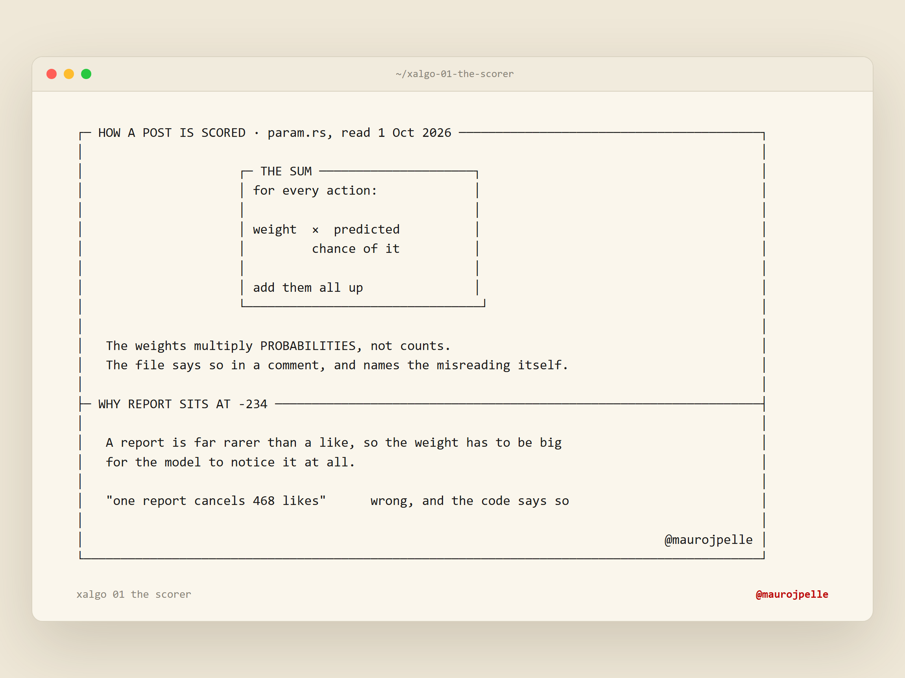
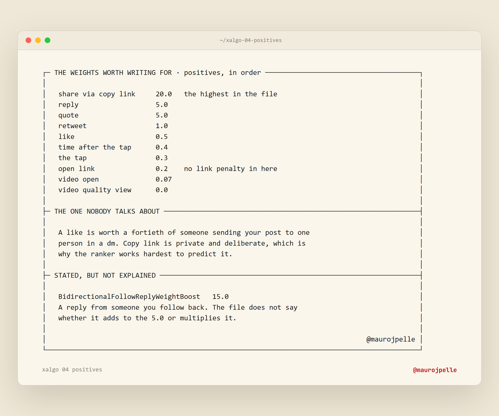

Video 02 · AI content systems that book calls
I read X's ranking code so you don't have to
Every default weight in the For You ranker, read line by line from param.rs on 1 October 2026.
Mauro · @maurojpelle
HOOK0:00 · cold open + today we'll go over
Every X algorithm number you were quoted this year comes from a system X replaced. The real defaults are public now, so I'm going to read them to you from the file.
ON SCREEN
Flythrough of this board, then cut to github.com/xai-org/x-algorithm with the params file open.
Today we'll go over
01Where the old numbers came from
02The formula
03When the weights landed
04The ten positive weights
05Copy link and the reply boost
06Four dwell params
07What costs you
08Why posting more doesn't stack
09Cold start
10What my own account shows
11Check any claim yourself
SAY
The authority is the open-source repo. Say that early, and keep saying it.
BEAT 01the folklore
Three numbers everyone quotes. All three are from 2023.
2023"a reply is worth 13.5 likes"
2023"a repost is 20x a like"
2023"one reply beats 150 likes"
SCREENPaste two or three real posts that quote these numbers. Crop out the handles.
brand/claims.md, 'The X For You ranking code' row #1
SAY
They come from the 2023 release of twitter/the-algorithm. That system got replaced. Say 2023 every time one of these is on screen.
BEAT 02open the repo
The ranker is open source. Open it with me.
SCREENOpen github.com/xai-org/x-algorithm. Read the stars and the last push date live.The 4 Aug figures (26,909 stars, 216 files) are stale. Re-read them on the day.
SAY
Then open home-mixer/params/param.rs. This is the file the rest of the video reads from.
BEAT 03the formula
The score is a weighted sum of predicted actions.
score = Σ weight × P(action)P = the model's predicted chance this viewer does it
SAY
The weights multiply probabilities. A report sits at -234 because a report is rare, and the file says so in a comment.

content/ascii/xalgo-01-the-scorer.png
BEAT 04when the weights landed
The formula shipped in January. The weight values landed in August.
2023
twitter/the-algorithmexplicit weights, since replaced→
JAN 2026
xai-org/x-algorithmformula + scored actions, no values→
13-14 AUG 2026
params/param.rs addedevery default published→
1 OCT 2026
Read line by linethe numbers on this boardbrand/claims.md, 'The no-weights rule is retired, 2026-10-01'
SAY
My own thread from 4 September said the code shows no weight values. That was true of the January release, and it's out of date now. Say so on camera.
BEAT 05the positives
Ten positive weights, read straight from the file.
param.rs defaults, read 2026-10-01 · brand/claims.md 'X ranking weights' · every value is a default
SAY
Read top to bottom. Copy link is the highest positive in the file. Video quality view is zero.
BEAT 06copy link and the reply boost
Copy link carries 20.0. A like carries 0.5.
ShareViaCopyLink
20.0
private and deliberate
Like
0.5
public and cheap
BidirectionalFollowReplyWeightBoost
15.0
a reply from someone you follow back
SAY
Weights scale predicted probability, and a copy-link share is rare. The file never says if the 15 adds or multiplies.

content/ascii/xalgo-04-positives.png
BEAT 07four dwell params
Time after the tap is worth more than the tap itself.
brand/claims.md, 'Four separate dwell params, don't collapse them'
SAY
Four separate params. Quote 0.05 as 'time after the tap' and the advice inverts. Write the body for the 0.4.
BEAT 08what costs you
Four actions get subtracted from the score.
bars drawn on absolute value · brand/claims.md X ranking weights
SAY
The file names the misreading itself: 'one report cancels 468 likes'. That's wrong, because these weights scale probabilities, not counts.
BEAT 09why posting more doesn't stack
Five posts don't buy five slots in one person's feed.
shape only · the decay values are not verified and are not shown · brand/claims.md thread row #5
SAY
A diversity function decays your own posts against each other inside one feed response. It sorts by score, so your best post keeps its value and the weaker ones absorb the decay.
BEAT 10cold start
Under 50,000 followers, a new post gets a cold start window.
follower cap
50,000
accounts under this
impression threshold
200
impressions
max post age
2 hours
7,200 seconds
feed slots
15-16
where it gets placed
brand/claims.md 'Cold start: follower cap / impression threshold / max post age / feed slots'
SAY
Every value in that file is a default. X can override any of them per experiment or per user without a release.
BEAT 11no levers left
There is no 9am lever, no hashtag lever and no link penalty in the code.
"We have eliminated every single hand-engineered feature and most heuristics from the system. The Grok-based transformer does all the heavy lifting by understanding your engagement history."xai-org/x-algorithm README
open link: +0.2
no link filter in the published code
old posts are removed, nothing resurfaces
brand/claims.md thread rows #4, #6, #9 · README quote from research/video-knowledge/05
SAY
The model reads the viewer's own history. What's left to work on is who sees the post first.
BEAT 12my own account
On my account, replies earned 10x the profile visits per impression of bare article links.
brand/analytics/exports/2026-09-09_2026-09-15-content.csv · brand/claims.md '@maurojpelle X analytics' · 10.2x on the rounded pair
SAY
One week, 9 to 15 September, one account. Two weeks is not a trend. A profile visit and a follow are scored actions, and replies are where I earn them.
BEAT 13check any claim yourself
Check any algorithm claim against the file in five minutes.
1
Open param.rshome-mixer/params/→
2
Search the param namee.g. ShareViaCopyLink→
3
Read the value and the comment→
4
Check the datedefaults move without noticeSCREENSearch param.rs for ShareViaCopyLink live, and read the line.
SAY
If a post quotes a number and the file has a different one, the file wins. If the file has no such param, the claim is that author's reading.
BEAT 14recap + CTA
The formula is public and so are the defaults. Write for the time after the tap and for the share.
IF YOU RUN AN ESTABLISHED AGENCY
DM me on X if you want this built into your agency's content system.
[CTA: confirm the current offer and link with Mauro before recording]
SAY
Recap in two sentences. Then the CTA, qualified: established agency owners.